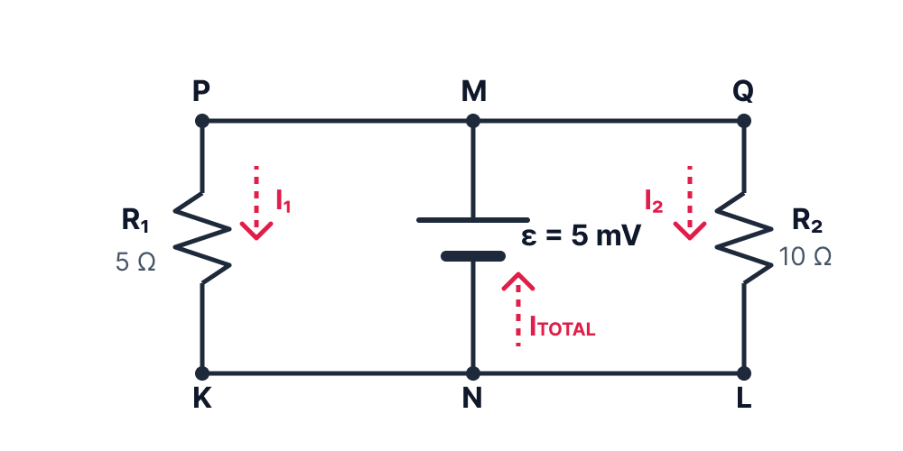
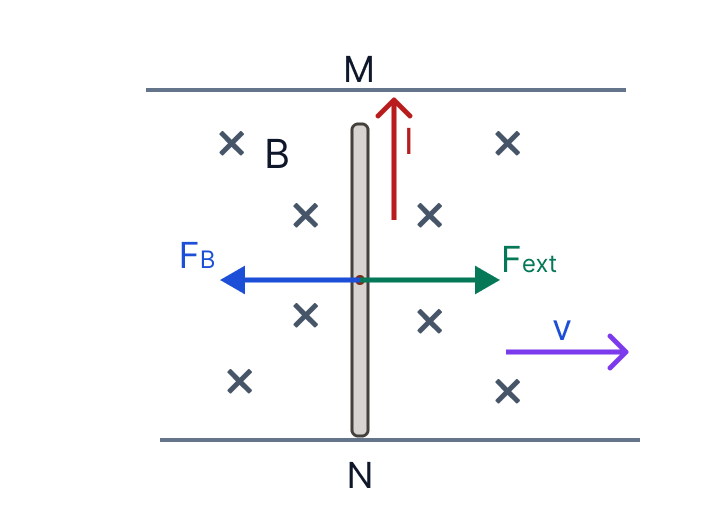

תמונת השאלה המקוריתלא נמצאה תמונה בשם question-image.png באותה תיקייה.
מבט כללי על השאלה
בשאלה הזאת יש לנו מוט מוליך שנע ימינה בתוך שדה מגנטי אחיד. עצם התנועה בשדה מפרידה מטענים במוט, ולכן המוט מתנהג כמו מקור מתח קטן מאוד. מאותו רגע כל השאלה הופכת לשילוב של שני עולמות: מצד אחד השראה אלקטרומגנטית, ומצד אחר ניתוח מעגל חשמלי פשוט.
חשוב מאוד לשים לב למבנה: המסילות חסרות התנגדות, ולכן כל הנקודות שעל המסילה העליונה נמצאות באותו פוטנציאל, וכל הנקודות שעל המסילה התחתונה באותו פוטנציאל. לכן שני הנגדים מחוברים למעשה במקביל ל"מקור המתח" שנוצר במוט MN.
אחרי שנחשב את הזרמים נוכל לעבור לפיזיקה של הכוחות: זרם במוט בתוך שדה מגנטי גורם לכוח מגנטי, והכוח הזה מתנגד לתנועה. מכאן כבר נגיע באופן טבעי גם לסעיף האנרגיה.
סעיף א' - לאיזו נקודה יש פוטנציאל גבוה יותר?
מה נתון: המוט MN נע במהירות קבועה ימינה, והשדה המגנטי אחיד וכיוונו לתוך הדף. M היא הנקודה העליונה של המוט ו-N היא הנקודה התחתונה.
מה מחפשים: לקבוע מי מן הנקודות M או N נמצאת בפוטנציאל גבוה יותר, ולהסביר את הקביעה בצורה פיזיקלית.
את כיוון הכוח נקבע בעזרת כלל יד ימין עבור מטען חיובי. אם חושבים על אלקטרונים, צריך לזכור שבסוף הופכים את הכיוון כי מטענם שלילי.
הצבה ופתרון:
שלב 1: קובעים את כיוון הכוח על מטען חיובי
נדמיין לרגע מטען חיובי קטן שנמצא בתוך המוט ונע יחד עם המוט ימינה. כיוון המהירות הוא ימינה וכיוון השדה המגנטי הוא לתוך הדף. לפי כלל יד ימין, הכוח המגנטי על מטען חיובי פועל כלפי מעלה לאורך המוט, כלומר מכיוון N אל כיוון M.
שלב 2: מסיקים מה קורה להפרדת המטענים
אם מטענים חיוביים נדחפים כלפי מעלה, הם נוטים להצטבר ליד M. במקביל, אלקטרונים נוטים להצטבר ליד N. כך נוצר במוט קצה עליון חיובי וקצה תחתון שלילי, כלומר נוצר הפרש פוטנציאלים בין שני קצות המוט.
שלב 3: מתרגמים זאת לשפת פוטנציאל
הנקודה שבה מצטברים מטענים חיוביים היא הנקודה שבפוטנציאל הגבוה יותר. לכן M היא ההדק החיובי של הכא"מ המושרה, ו-N היא ההדק השלילי.
לכן הפוטנציאל בנקודה \( M \) גבוה יותר מן הפוטנציאל בנקודה \( N \).
טיפ מורה:
הרבה תלמידים מפעילים מיד את הכלל על אלקטרונים ומתבלבלים. הדרך הבטוחה היא תמיד להפעיל קודם את כלל יד ימין על מטען חיובי דמיוני, ורק בסוף להיזכר שהאלקטרונים נעים בכיוון ההפוך. כך כמעט לא טועים.
סעיף ב' - חישוב הכא"מ המושרה בין M ל-N
מה נתון: \( B = 10^{-2}\ \mathrm{T} = 0.01\ \mathrm{T} \), \( \ell = 0.1\ \mathrm{m} \), \( v = 5\ \mathrm{m/s} \). כל הנתונים כבר נתונים ביחידות MKS.
מה מחפשים: את הכא"מ המושרה במוט MN, כלומר את הפרש הפוטנציאלים שנוצר בין שני קצות המוט.
נוסחאות ועקרונות בשימוש: \( \varepsilon = B\ell v \)
הצבה ופתרון:
נציב את הנתונים ישירות בנוסחה לכא"מ מושרה בקצות מוט הנע בשדה מגנטי:
הכא"מ המושרה בין \( M \) ל-\( N \) הוא \( 0.005\ \mathrm{V} \) (או \( 5\ \mathrm{mV} \)).
טיפ מורה:
חשוב להבין שמוט מוליך הנע בשדה מגנטי מתפקד באופן זהה למקור מתח (סוללה). הכא"מ המושרה (\( \varepsilon = B\ell v \)) נוצר בעקבות הכוח המגנטי הפועל על המטענים במוט בגלל תנועתו. לכן ערך הכא"מ תלוי אך ורק במאפייני המוט והשדה המגנטי, ואינו מושפע מהמעגל שאליו הוא מחובר - בין אם זו לולאה בודדת, שתי לולאות זרם כמו בשאלה זו, או קצוות פתוחים.
רגע של למידה:
תלמידה שואלת: אם הזרם זורם מ-N ל-M בתוך המוט, איך אנחנו יכולים לומר שהפוטנציאל ב-M גבוה יותר? הרי למדנו שזרם זורם תמיד מפוטנציאל גבוה לנמוך!
תשובה: שאלה מצוינת! כדי להבין זאת היטב, נזכיר שהמוט מתפקד כמו כוח אלקטרו-מניע (כא"מ) - כלומר כמו סוללה. הזרם זורם מפוטנציאל גבוה לנמוך בחלקים של המעגל החיצוני (דרך הנגדים). אבל בתוך מקור המתח עצמו, נדרש כוח (במקרה שלנו - כוח לורנץ) שלוקח את המטענים החיוביים מההדק בעל הפוטנציאל הנמוך (N) ו"מעלה" אותם בכוח להדק עם הפוטנציאל הגבוה (M). לכן, מחוץ למוט הזרם יזרום מ-M ל-N, ואילו בתוך המוט המצב הפוך והזרם עובר מ-N ל-M, ממש כמו בתוך סוללה שמספקת אנרגיה למעגל.
סעיף ג' - חישוב עוצמת הזרם וכיוונו בכל רכיב
מה נתון: מסעיף ב' מצאנו \( \varepsilon = 0.005\ \mathrm{V} \). נתון גם \( R_1 = 5\ \Omega \), \( R_2 = 10\ \Omega \), והתנגדות המסילות והמוט זניחה.
מה מחפשים: את עוצמת הזרם ואת כיוונו ב-\( R_1 \), ב-\( R_2 \) ובמוט MN.
נוסחאות ועקרונות בשימוש: \( V = IR \)
חוק הצמתים של קירכהוף (חוק שימור המטען): סכום הזרמים הנכנסים לצומת שווה לסכום הזרמים היוצאים ממנה.
בגלל שהתנגדות המסילות זניחה, אין עליהן נפילת מתח. לכן כל המסילה העליונה נמצאת בפוטנציאל של M, וכל המסילה התחתונה נמצאת בפוטנציאל של N.
הצבה ופתרון:
שלב 1: מבינים את מבנה המעגל (מעגל חשמלי שקול)
מאחר שהרגע למדנו שהמוט מתנהג כמו מקור מתח (סוללה), נצייר מעגל שקול. מאחר שהמסילה העליונה מוליכה אידיאלית, מתקבל \( V_P = V_M = V_Q \). באופן דומה, על המסילה התחתונה מתקבל \( V_K = V_N = V_L \). לכן שני הנגדים מחוברים במקביל למקור המתח האידיאלי (המוט MN) המספק מתח של \( 5\ \mathrm{mV} \).

שלב 2: מחשבים את הזרם בנגד \(R_1\)
על הנגד \(R_1\) פועל המתח \( \varepsilon \), ולכן לפי חוק אוהם:
בתוך מקור מתח הזרם זורם מן ההדק השלילי להדק החיובי. לכן במוט MN כיוון הזרם הוא מן N אל M.
הזרם ב-\( R_1 \) הוא \( 1\ \mathrm{mA} \) מן \( P \) אל \( K \). הזרם ב-\( R_2 \) הוא \( 0.5\ \mathrm{mA} \) מן \( Q \) אל \( L \). הזרם במוט \( MN \) הוא \( 1.5\ \mathrm{mA} \) מן \( N \) אל \( M \).
טיפ מורה:
יש כאן נקודה עדינה וחשובה: הלולאה השמאלית והלולאה הימנית אינן "מבטלות" זו את זו. לפי חוק לנץ, בלולאה השמאלית מתקבל זרם נגד כיוון השעון ובלולאה הימנית זרם עם כיוון השעון, אבל בשתיהן הזרם במוט עצמו הוא מאותו כיוון, מן N אל M. לכן דווקא במוט הזרמים מצטרפים.
סעיף ד' - האם פועל על המוט כוח חיצוני?
מה נתון: המוט נע במהירות קבועה ימינה. מסעיף ג' מצאנו כי במוט זורם זרם \( I_{MN} = 1.5\ \mathrm{mA} = 1.5\times10^{-3}\ \mathrm{A} \). אורך המוט \( \ell = 0.1\ \mathrm{m} \), והשדה \( B = 0.01\ \mathrm{T} \).
מה מחפשים: לקבוע אם יש צורך בכוח חיצוני, ואם כן לחשב את גודלו ואת כיוונו.
נוסחאות ועקרונות בשימוש: \( F = I\ell B\sin\alpha \)
החוק הראשון של ניוטון: גוף הנע במהירות קבועה (או נמצא במנוחה) נמצא בשיווי משקל כוחות, כלומר סכום הכוחות הפועלים עליו שווה לאפס (\( \Sigma F = 0 \)).

הצבה ופתרון:
שלב 1: קובעים את כיוון הכוח המגנטי על המוט
במוט זורם זרם מן N אל M, כלומר כלפי מעלה. השדה המגנטי נכנס לתוך הדף. לפי כלל יד ימין עבור תיל נושא זרם, כאשר האגודל מצביע בכיוון הזרם והאצבעות בכיוון השדה, כף היד מצביעה על כיוון הכוח. לכן הכוח המגנטי על המוט פועל שמאלה.
כן, פועל על המוט כוח חיצוני. גודלו \( 1.5\times10^{-6}\ \mathrm{N} \) וכיוונו ימינה.
טיפ מורה:
משפט כמו "המהירות קבועה" לא אומר שאין כוחות. הוא אומר שסכום הכוחות הוא אפס. זו מלכודת נפוצה מאוד: לפעמים יש שני כוחות לא-אפסיים, שווים בגודל והפוכים בכיוון, ולכן התנועה נשארת במהירות קבועה.
סעיף ה' - מהו מקור האנרגיה במערכת?
מה נתון: במעגל זורמים זרמים דרך הנגדים, ולכן האנרגיה החשמלית מתבזבזת בהם כחום. במקביל המוט ממשיך לנוע במהירות קבועה.
מה מחפשים: לזהות מהו מקור האנרגיה שמזין את המערכת, כלומר מהיכן מגיעה האנרגיה שהופכת בסוף לחום בנגדים.
נוסחאות ועקרונות בשימוש: \( P = \frac{W}{\Delta t} \)\( P = I V_{AB} \)\( W = F \Delta x \cos \alpha \)
עקרון שימור האנרגיה: קובע שאנרגיה אינה נוצרת יש מאין ואינה אובדת בעולם, אלא מומרת מצורה אחת לצורה אחרת.
הצבה ופתרון:
שלב 1: מזהים איפה האנרגיה נעלמת
בנגד \(R_1\) ובנגד \(R_2\) זורם זרם, ולכן שניהם מתחממים ומבזבזים אנרגיה חשמלית כחום. כלומר יש כאן צריכת אנרגיה מתמשכת.
שלב 2: מזהים מי מבצע עבודה במערכת ומי לא
חשוב לזכור: הכוח המגנטי (כוח לורנץ) אינו מבצע עבודה. ממש כמו נורמל או מתיחות (הפועלים בניצב ובכך יכולים רק להשפיע על מסלול התנועה אך לא לבצע עבודה), כך גם הכוח המגנטי. ככלל שדה מגנטי לא מבצע עבודה. הכוח היחידי שיכול לבצע פה עבודה הוא הכוח החיצוני. העבודה המכנית שהכוח הזה מספק עוברת המרה והופכת לאנרגיה החשמלית שהמעגל צורך ומנצל בעזרת הנגדים.
שלב 3: מפתחים את משוואת ההספק המכני
מדף הנוסחאות ידוע שהספק הוא קצב עשיית העבודה \( P = \frac{W}{\Delta t} \), וכן שעבודת כוח קבוע היא \( W = F \Delta x \cos\alpha \). מכיוון שהכוח החיצוני פועל בכיוון התנועה בדיוק (\( \alpha = 0^\circ \)), העבודה היא פשוט \( W = F_{ext}\Delta x \). נציב זאת ונקבל:
קיבלנו אותו הספק בדיוק. זה מראה שהעבודה המכנית של הכוח החיצוני מומרת לאנרגיה חשמלית, וזו הופכת בסוף לאנרגיית חום בנגדים.
מקור האנרגיה במערכת הוא העבודה המכנית של הכוח החיצוני שמניע את המוט ימינה.
רגע של למידה:
קל מאוד לענות בטעות "השדה המגנטי הוא מקור האנרגיה". זה לא נכון. השדה המגנטי רק יוצר את התנאים להשראה ולקיום הכוח המגנטי, אבל האנרגיה עצמה מגיעה מן הסוכן החיצוני שמושך או דוחף את המוט ומבצע עליו עבודה.
נוסח השאלה המקורית
תמונת השאלה המקוריתלא נמצאה תמונה בשם question-image.png.